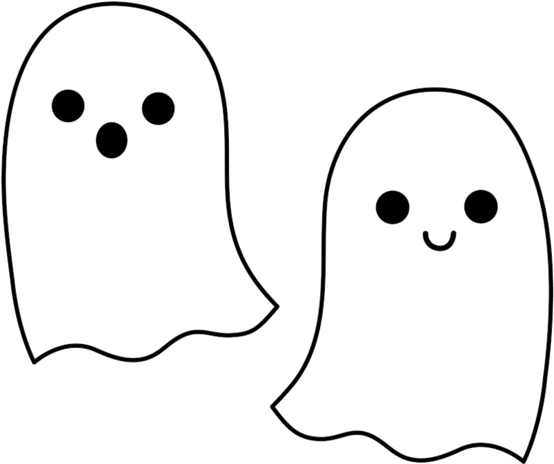
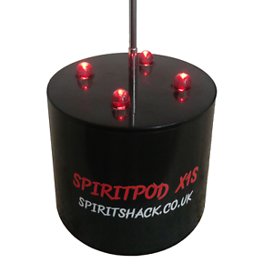
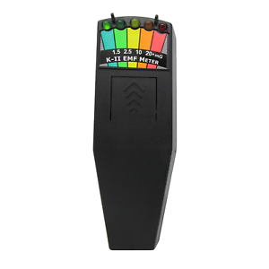
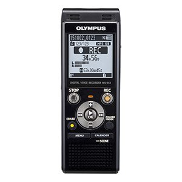

Ghost
Equipment
A ghost hunter uses many tools to help them when they need it. While almost anything can become a tool 3 items are used most often. An EMF reader senses electromagnetic waves. A rem pod senses changes in temerature. The most usefull tool in a ghost hunter's arsenal is the Digital recorder. It's used to pick up
|  |
|  |
|  |